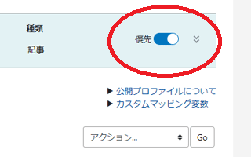
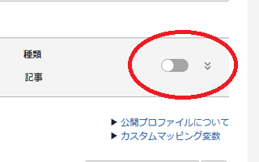

当ブログをAMPに対応しました
当ブログをAMPに対応してみたので、Movable Typeで作成したブログをAMPに対応する際の手順についてご紹介します。
■アーカイブテンプレートのコピー
作業をする前に、テンプレートのバックアップをとっておくことをおすすめします。
まず最初にAMPページを出力するためのテンプレートを作成しますが、オリジナルの方のブログ記事のテンプレートをコピーして複製します。
複製したら、コピーの方にAMPページなどの適当な名前をつけておきます。
「オリジナルの方」は「優先マーク」がついているはずですが、オリジナルの方で設定したURLのパスが優先されるため、今までの記事のパーマリンクなどが変更されることはありません。
・オリジナルページ側

コピーした「AMPページ」の方には、AMP用のURLで出力されるようにカスタムパスを設定します。
こちらは優先マークがついていないため、個別ページのパーマリンクなどへの影響はありませんが、AMPページのファイル自体は出力されます。
・AMPページ側

そのため、オリジナルの方のURL構成などは変更されない状態のまま、AMPページも別に出力されることになります。
■AMPページのURLの設定
AMPページのURLはいろいろな方法があり、「ファイル名.amp.html」のような形のURLにすることも出来ますが、当サイトでは「AMP」フォルダ下で出力されるようにカスタムパスを設定しました。
例えば、当ブログではオリジナルページを「カテゴリ名/投稿名.html」の形で運営しているため、AMPページはampフォルダ下の「amp/カテゴリ名/投稿名.html」の形で出力されるように以下のカスタムパスで設定しています。
amp/%C/%b.html
「%C」はカテゴリ名、「%b」は投稿名ですが、こちらのページを参考にして、既存のURLと同じ形式になるように設定しておくことをおすすめします。
■AMPの基本的な設定
あとは、プロジェクトの公式サイトにあるボイラープレートを参考にAMP用のテンプレートを修正していきます。
DTDはHTML5とほぼ同様の「AMP HTML」バージョンで書いていきます。W3C勧告のHTML5とはimgタグの仕様などで若干違う点もありますが、ほぼHTML5と考えてよいかと思います。
このあたりはAMP公式プロジェクトのサイトに手順が記載されているため、その通りに記載すればよいかと思います。
稲妻マークでDTDを修正し、<link rel="canonical"でオリジナルページに正規化し、外部CSSを削除した上でCSSを<style amp-custom>内にコピペして、定型文を２つほどコピペしたらほぼ完成です。
<link rel="canonical"で正規化する際、以下のように記載するとよいかもしれません。
<link rel="canonical" href="<$MTEntryPermalink$>">
ただし、上記のとおり、優先マッピングがオンになっていた場合、この<$MTEntryPermalink$>のURLはAMPページの方が出力されてしまうため、「オフ」になっていることを確認することをおすすめします。
また、フッター部分のアクセス解析などはウィジットの中身をコピペでAMP版テンプレートに直接貼り付けたのち、アクセス解析の部分を削除することをおすすめします。
■<amp-img src=への変換方法
難しい点は画像の<imgタグを<amp-imgに変換することですが、Movable Typeの場合、<$MTInclude module="ブログ記事の詳細"$>の部分などに「regex_replace」を設定して置換できます。
こちらのページにあるように、スラッシュで囲まれた部分を検索し、指定した文字列に置換してファイルを出力する形になります。
→ regex_replace - グローバル・モディファイアリファレンス
そのため、「img」を「amp-img」に変換する際、<$MTInclude module="ブログ記事の詳細" regex_replace="/img/","amp-img"$>でも置換できるかと思いますが、「img」だと本文中でも使用している可能性もあるため、「img src=」を「amp-img src=」に変換すればよいと思います。
これを上記ページの使用例にあてはめると「regex_replace="/img src=/","amp-img src="」になります。
ただし、これだと最初だけのひとつ目だけしか置換されないため、「g」を付けて全て置換されるようにします。
<$MTInclude module="ブログ記事の詳細" regex_replace="/img src=/g","amp-img src="$>
当ブログでは「img src=」などの文字列も本文中などで使用していますので、以下の入れ子を使って置換していますが、この「regex_replace」を使えば、タグを置換した上で出力することができます。
テストする際、テンプレートごと全てのページを再構築するのではなく、AMPテンプレートの設定を保存した上で適当な１ページのみを更新してチェックされることをおすすめします。個別ページで更新ボタンを押したのち、ampバージョンのURLにアクセスすれば「amp-img」に変わっているはずです。
そのほか、ヘッダー部分のロゴ画像などについては、テンプレートに直接記載してしまった方がよいかもしれません。
■border="0"の削除
当ブログではborder="0"なども付与しているため、「 ｂorder="0"」を空の「」に置換してこれも削除するように設定しておきました。（※ここでの記述自体も置換されるため、bを全角のｂにしています。）
ダブルクォートが重複する際はシングルクォートで以下のように記載します。
「regex_replace='/ ｂorder="0"/g',''」
上記と合わせると以下のようになります。
<$MTInclude module="ブログ記事の詳細" regex_replace="/img src=/g","amp-img src=" regex_replace='/ ｂorder="0"/g',''$>
■「layout」の設定
画像の拡大、縮小の「layout」については、当ブログでは「responsive」ではなく、実寸以上には拡大されない「intrinsic」を設定しました。サイトによって使用している画像の質や大きさに違いがあるかと思いますので、解像度が低く、200px程度の小さめの画像を多く使用している場合は「intrinsic」がおすすめです。
ただ、高解像度の写真画像の場合は実寸以上に拡大してもそれほどぼやけないはずですので、responsiveでもよいかと思います。
当ブログでは全ての画像に「alt」を設定しているため、「alｔ=」を「layout="intrinsic" alｔ=」で置換することで以下のようにレイアウトタグを付与しました。（※tを全角にしてます。）
「regex_replace='/alｔ=/g','layout="intrinsic" alｔ='」
ここまでをまとめると以下のようになります。
<$MTInclude module="ブログ記事の詳細" regex_replace="/img src=/g","amp-img src=" regex_replace='/ ｂorder="0"/g','' regex_replace='/alｔ=/g','layout="intrinsic" alｔ='$>
■終了タグ</amp-img>の付与
終了タグ</amp-img>についてですが、これはMTSetVarBlockを使って置換することをおすすめします。
→ MTSetVarBlock - テンプレートタグリファレンス
この場合は、上記<amp-imgの置換の箇所の記述は必要なくなりますが、当ブログでは以下のように設定しておきました。
<mt:SetVarBlock name="before">/<img (.*?)>/g</mt:SetVarBlock>
<mt:SetVarBlock name="after"><amp-img \1></amp-img></mt:SetVarBlock>
<$MTInclude module="ブログ記事の詳細" regex_replace="$before","$after"$>
imgタグで囲まれているパターンのうち(.*?)にマッチした部分を取り出して「\1」に入れ、regex_replaceで置換するという意味になりますが、詳しくは正規表現とか置換、後方参照などで調べてみることをおすすめします。
(.*)のように記入すると、pタグの後ろの方の>が認識されてpタグの後ろに</amp-img>が付与されてしまったので、最短マッチで終えるハテナマークをつけて(.*?)にするとうまくいきました。
これらを全部合わせると、最終的には以下のようになりました。
<mt:SetVarBlock name="before">/<img (.*?)>/g</mt:SetVarBlock>
<mt:SetVarBlock name="after"><amp-img \1></amp-img></mt:SetVarBlock>
<$MTInclude module="ブログ記事の詳細" regex_replace="$before","$after" regex_replace='/ ｂorder="0"/g','' regex_replace='/alｔ=/g','layout="intrinsic" alｔ='$>
（※置換対策でborderのbとaltのtを全角にしてます。実際に使用する際は半角で記入してください。）
当ブログではこれでうまく出力されましたが、これらを組み合わせれば、対応できるかと思います。
■<link rel="amphtml"でAMPページを指定
あとはampチェックで問題なければ、オリジナルページからampページにリンクして公開すればよいでしょう。
→ AMPテスト
当ブログでは正規のオリジナルページのテンプレートの方に以下のように設定しておきました。
<link rel="amphtml" href="https://blog-tips.net/blog/amp/<$MTCategoryBasename$>/<$mt:EntryBasename$>.html">
問題なさそうでしたら、全ページを再構築して反映させます。
同様に、インデックスページやカテゴリページ、アーカイブページなどもそれぞれAMP化しておくことをおすすめします。